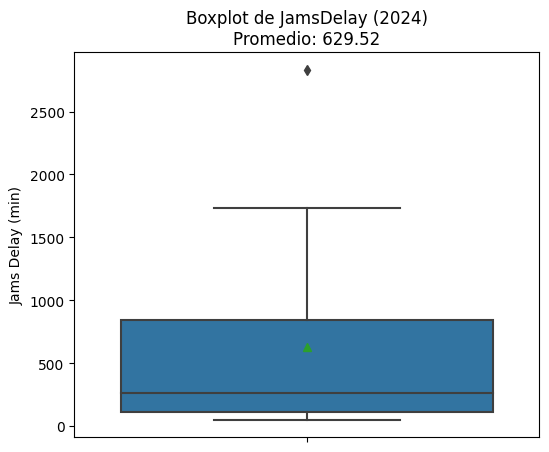
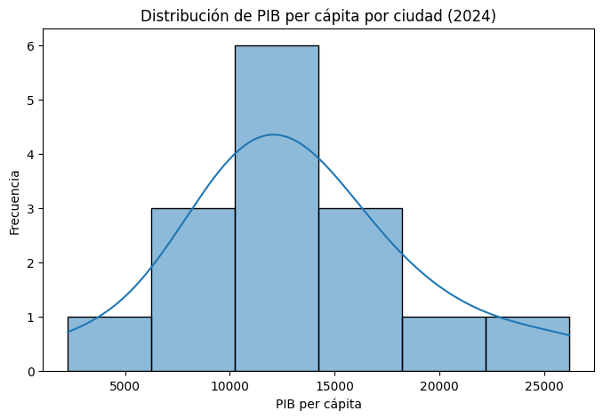
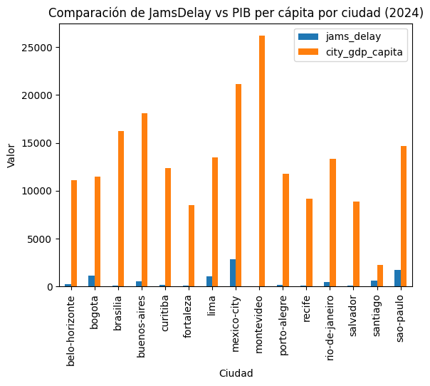
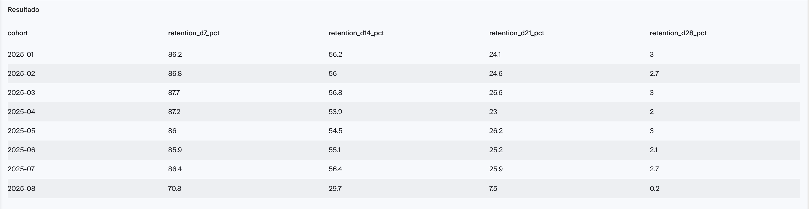
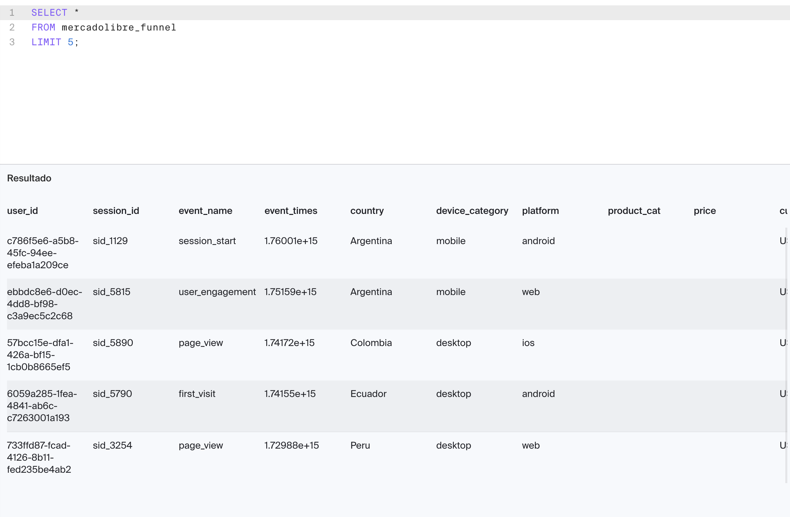
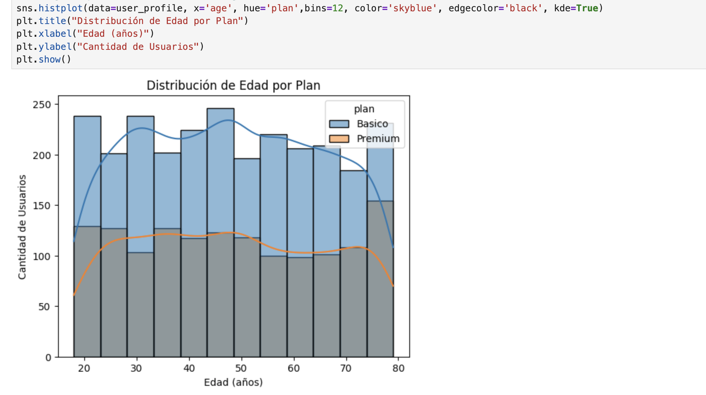
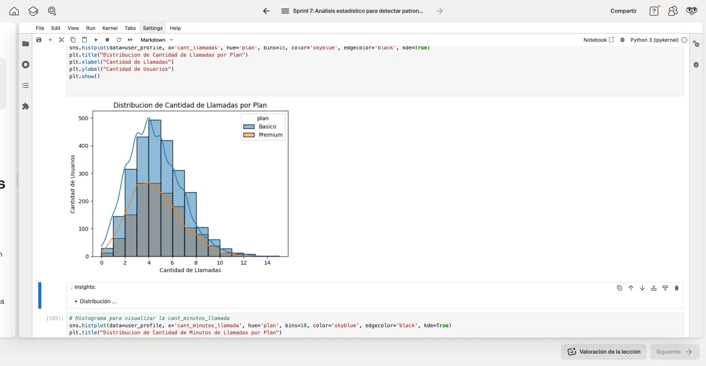
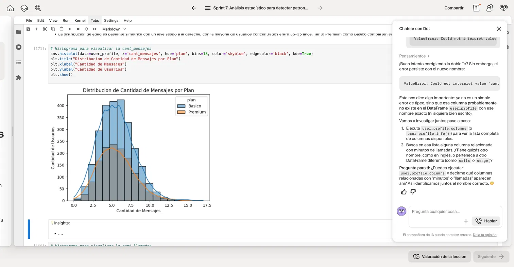
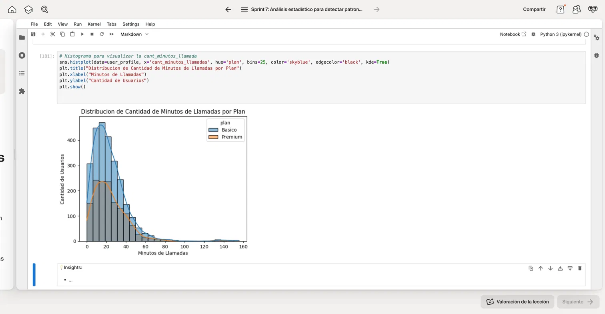

Data Analyst Junior
Transformando datos en decisiones de negocio
Soy un Data Analyst Junior con mentalidad de negocio y experiencia emprendedora. Especializado en Python, SQL y Tableau, con capacidad demostrada para transformar datos complejos en insights accionables.
Mi carrera comenzó en finanzas y comercio exterior. Luego, como emprendedor, creé sistemas automatizados que generaban insights en tiempo real y reportes que impactaban directamente las ganancias. Esa experiencia me mostró que los datos bien analizados transforman empresas.
Python • SQL • Tableau • Excel • Pandas • Git • Jupyter
Análisis EDA • ETL • Automatización • Business Analytics
Español (Nativo) • Inglés (B1) • Portugués (Intermedio-Avanzado)
TripleTen Bootcamp | Junio 2025
Evaluar cómo la movilidad urbana (congestión vehicular) se relaciona con la productividad económica en las principales ciudades latinoamericanas para identificar dónde priorizar inversión en infraestructura.
Identifiqué que Bogotá presenta la combinación más crítica: altos niveles de congestión (jams_delay: 1,141.55) + PIB per cápita bajo (11,442). Candidata prioritaria para inversión en infraestructura.



TripleTen Bootcamp | Enero - Agosto 2025
Identificar dónde se pierden usuarios en el embudo de conversión y cómo varía la retención a lo largo del tiempo para optimizar estrategias de activación y conversión.
El cuello de botella crítico es select_item → add_to_cart (pérdida de 66%). Uruguay lidera conversión final (4.55%), mientras Paraguay/Ecuador/Colombia registran 0% (problemas técnicos locales). La mayor fuga en retención ocurre entre días 14-21.


TripleTen Bootcamp | 2024
Evaluar el comportamiento de clientes de una empresa de telecomunicaciones en Latinoamérica para identificar patrones de consumo, detectar clientes de alto valor y diseñar estrategias de retención basadas en segmentación.
Base de clientes 87.5% adultos (edad media-alta). Segmentación de uso: 27.5% Bajo Uso (3.2 llamadas), 50% Uso Medio (4.5 llamadas), 22.5% Alto Uso (8.2 llamadas, generan 6-7x más ingresos por sobrecuota).



